7. Pokédex completa (188 espécies, stats no Lv1)
Stats no Lv1, sem bônus. Multiplique por 2 (Lv2), 4 (Lv3), 8 (Lv4) ou 16 (Lv5). Primeira coluna: sprite normal e shiny. ★ = versão shiny aprimorada.
 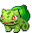 |
#001 Bulbasaur Planta Veneno |
Veneno 2 · Cresc. 14% Orçamento 124 · Recarga 3.5s · HP do time +794 |
Sem habilidade ★ Semente ★ — Ao atacar: +2 Crescimento nesta batalha. |
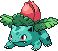 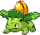 |
#002 Ivysaur Planta Veneno |
Veneno 3 · Cresc. 24.1% Orçamento 213 · Recarga 3.2s · HP do time +1363 |
Semente Sanguessuga — Ao atacar: cura o time em 30% do Veneno no inimigo. |
 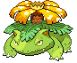 |
#003 Venusaur Planta Veneno |
Veneno 4 · Cresc. 39.2% Orçamento 347 · Recarga 2.7s · HP do time +2221 |
Fotossíntese — A cada 3s: o time cura 30 e este ganha +4 Crescimento nesta batalha. |
 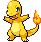 |
#004 Charmander Fogo |
Queim. 9 Orçamento 120 · Recarga 3.0s · HP do time +768 |
Sem habilidade ★ Faísca ★ — Ao atacar: +1 Queimadura nesta batalha. |
 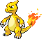 |
#005 Charmeleon Fogo |
Queim. 15 Orçamento 213 · Recarga 2.7s · HP do time +1363 |
Brasa — Ao atacar: +1 Queimadura nesta batalha. |
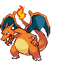 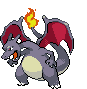 |
#006 Charizard Fogo Voador |
Queim. 13 · Carga 1 Orçamento 353 · Recarga 2.2s · HP do time +2259 |
Asas de Fogo — Ao atacar: o aliado atrás ganha +2 Queimadura nesta batalha e é carregado em 0.5s. |
 |
#007 Squirtle Água |
Cura 38 · Limpeza 4.4% Orçamento 122 · Recarga 3.6s · HP do time +781 |
Sem habilidade ★ Bolhas ★ — Ao atacar: +5 Cura nesta batalha. |
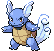 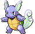 |
#008 Wartortle Água |
Cura 60 · Limpeza 7.7% Orçamento 213 · Recarga 3.2s · HP do time +1363 |
Casco Firme — Início da batalha: o time ganha Escudo igual a 2x a Cura dos aliados adjacentes. |
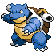 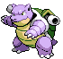 |
#009 Blastoise Água |
Cura 84 · Limpeza 12.6% Orçamento 351 · Recarga 2.7s · HP do time +2246 |
Hidro Canhão — Contínuo: aliados de Água adjacentes têm +20 Cura e +5 Limpeza. |
 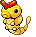 |
#010 Caterpie Inseto |
Enxame 4 · Multicast 2 Orçamento 62 · Recarga 3.5s · HP do time +397 |
Sem habilidade |
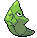 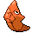 |
#011 Metapod Inseto |
Enxame 6 · Multicast 2 Orçamento 88 · Recarga 3.9s · HP do time +563 |
Endurecer — Ao atacar: +8 Escudo nesta batalha. |
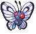 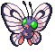 |
#012 Butterfree Inseto Voador |
Carga 1 · Enxame 7 · Multicast 2 Orçamento 213 · Recarga 2.9s · HP do time +1363 |
Pó do Sono — Ao atacar: atrasa os inimigos da linha em 0.5s. Contínuo: aliados Inseto têm +2 Carga. |
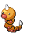 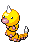 |
#013 Weedle Inseto Veneno |
Veneno 1 · Enxame 2 · Multicast 2 Orçamento 62 · Recarga 3.4s · HP do time +397 |
Sem habilidade ★ Ferrão ★ — Ao atacar: +1 Veneno nesta batalha. |
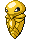 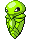 |
#014 Kakuna Inseto Veneno |
Veneno 1 · Enxame 4 · Multicast 2 Orçamento 88 · Recarga 3.8s · HP do time +563 |
Casulo — Início da batalha: o time ganha 30 de Escudo por aliado Inseto. |
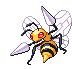 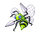 |
#015 Beedrill Inseto Veneno |
Veneno 5 · Enxame 6 · Multicast 3 Orçamento 213 · Recarga 2.8s · HP do time +1363 |
Agulha Dupla — Contínuo: Multicast +1. Cada golpe aplica +2 Veneno. ★ Agulha Dupla ★ — Contínuo: Multicast +3. Cada golpe aplica +1 Veneno. |
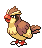 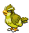 |
#016 Pidgey Normal Voador |
Dano 26 · Carga 0 Orçamento 80 · Recarga 3.3s · HP do time +868 |
Sem habilidade |
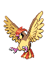 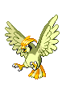 |
#017 Pidgeotto Normal Voador |
Dano 44 · Carga 1 Orçamento 149 · Recarga 2.9s · HP do time +1616 |
Ataque Rápido — Início da batalha: ataca imediatamente. |
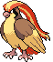 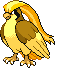 |
#018 Pidgeot Normal Voador |
Dano 57 · Carga 1 Orçamento 258 · Recarga 2.2s · HP do time +2798 |
Vendaval — Ao atacar: carrega todos os aliados Voadores em 0.2s. |
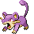 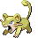 |
#019 Rattata Normal |
Dano 36 Orçamento 80 · Recarga 2.9s · HP do time +1059 |
Sem habilidade |
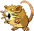 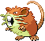 |
#020 Raticate Normal |
Dano 62 Orçamento 177 · Recarga 2.3s · HP do time +2343 |
Hiper Presa — Depois que você compra um Pokémon de Normal: ganha +5 Dano permanentemente. |
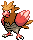 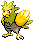 |
#021 Spearow Normal Voador |
Dano 26 · Carga 0 Orçamento 88 · Recarga 2.9s · HP do time +954 |
Sem habilidade |
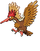 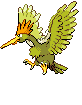 |
#022 Fearow Normal Voador |
Dano 45 · Carga 3 Orçamento 201 · Recarga 2.2s · HP do time +2180 |
Bando — Contínuo: +2 Carga para cada Voador na equipe. |
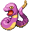 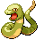 |
#023 Ekans Veneno |
Veneno 4 Orçamento 97 · Recarga 3.3s · HP do time +621 |
Sem habilidade |
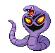 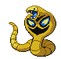 |
#024 Arbok Veneno |
Veneno 7 Orçamento 204 · Recarga 2.7s · HP do time +1306 |
Olhar Paralisante — Início da batalha: Desativa o inimigo oposto por 3s e ganha +10 Punir nesta batalha. |
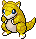 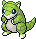 |
#027 Sandshrew Terra |
Dano 129 · Perfurar 2x Orçamento 101 · Recarga 3.6s · HP do time +646 |
Sem habilidade |
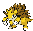 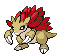 |
#028 Sandslash Terra |
Dano 218 · Perfurar 2x Orçamento 205 · Recarga 3.0s · HP do time +1312 |
Areia Afiada — Quando o time recebe Escudo: ganha Dano igual a 15% do escudo nesta batalha. |
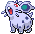 |
#029 Nidoran♀ Veneno |
Veneno 4 Orçamento 93 · Recarga 3.6s · HP do time +595 |
Sem habilidade |
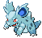 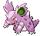 |
#030 Nidorina Veneno |
Veneno 6 Orçamento 166 · Recarga 3.3s · HP do time +1062 |
Ponto Venenoso — Ao comprar: Pokémon de Veneno na loja ganham +1 Veneno pelo resto da run. |
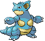 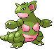 |
#031 Nidoqueen Veneno Terra |
Dano 99 · Veneno 6 · Perfurar 2x Orçamento 290 · Recarga 2.8s · HP do time +1856 |
Rainha do Veneno — Início da batalha: ganha Veneno igual ao Veneno somado dos aliados. |
| #032 Nidoran♂ Veneno |
Veneno 4 Orçamento 92 · Recarga 3.4s · HP do time +589 |
Sem habilidade | |
| #033 Nidorino Veneno |
Veneno 6 Orçamento 166 · Recarga 3.0s · HP do time +1062 |
Chifre Venenoso — Quando um aliado com Veneno ataca: ganha +1 Dano permanentemente. | |
| #034 Nidoking Veneno Terra |
Dano 91 · Veneno 6 · Perfurar 2x Orçamento 290 · Recarga 2.6s · HP do time +1856 |
Rei Tóxico — Quando um aliado com Veneno ataca: carrega este em 0.5s. |
| #037 Vulpix Fogo |
Queim. 9 Orçamento 116 · Recarga 3.0s · HP do time +742 |
Sem habilidade | |
| #038 Ninetales Fogo |
Queim. 15 Orçamento 265 · Recarga 2.2s · HP do time +1696 |
Fogo Interior — Contínuo: Dano extra igual a 8x a sua Queimadura. Quando um aliado de Fogo ataca: +1 Queimadura nesta batalha. |
| #041 Zubat Veneno Voador |
Veneno 2 · Carga 0 Orçamento 95 · Recarga 3.3s · HP do time +608 |
Sem habilidade | |
| #042 Golbat Veneno Voador |
Veneno 5 · Carga 1 Orçamento 239 · Recarga 2.4s · HP do time +1530 |
Sugar Sangue — Ao atacar: cura o time em 30% do dano causado. | |
| #169 Crobat Veneno Voador |
Veneno 4 · Carga 1 Orçamento 354 · Recarga 1.5s · HP do time +2266 |
Voo Silencioso — Contínuo: este e o aliado atrás têm +15% vel. de recarga. |
| #043 Oddish Planta Veneno |
Veneno 2 · Cresc. 12.2% Orçamento 108 · Recarga 3.9s · HP do time +691 |
Sem habilidade | |
| #044 Gloom Planta Veneno |
Veneno 3 · Cresc. 20.4% Orçamento 180 · Recarga 3.6s · HP do time +1152 |
Odor — Ao atacar: aliados de Veneno adjacentes ganham +2 Veneno nesta batalha. | |
| #045 Vileplume Planta Veneno |
Veneno 4 · Cresc. 31.8% Orçamento 281 · Recarga 3.4s · HP do time +1798 |
Pétalas Tóxicas — Contínuo: tem Dano extra igual a 100% da Veneno no inimigo. | |
| #182 Bellossom Planta |
Dano 45 · Cresc. 48.9% Orçamento 281 · Recarga 3.4s · HP do time +1798 |
Dança das Pétalas — Ao atacar: aliados de Planta ganham +3 Crescimento nesta batalha. |
| #046 Paras Inseto Planta |
Cresc. 5.5% · Enxame 4 · Multicast 2 Orçamento 90 · Recarga 4.0s · HP do time +576 |
Sem habilidade | |
| #047 Parasect Inseto Planta |
Cresc. 10.5% · Enxame 7 · Multicast 2 Orçamento 173 · Recarga 3.9s · HP do time +1107 |
Cogumelo Parasita — Quando qualquer Pokémon é nocauteado: +2 Veneno permanentemente. |
| #048 Venonat Inseto Veneno |
Veneno 2 · Enxame 4 · Multicast 2 Orçamento 103 · Recarga 3.5s · HP do time +659 |
Sem habilidade | |
| #049 Venomoth Inseto Veneno |
Veneno 2 · Enxame 5 · Multicast 2 Orçamento 205 · Recarga 2.4s · HP do time +1312 |
Pó Alucinógeno — Quando um aliado de Veneno ataca: ele ganha +5% vel. de recarga nesta batalha. |
| #050 Diglett Terra |
Dano 72 · Perfurar 2x Orçamento 89 · Recarga 2.3s · HP do time +570 |
Sem habilidade | |
| #051 Dugtrio Terra |
Dano 117 · Perfurar 2x · Multicast 3 Orçamento 194 · Recarga 1.7s · HP do time +1242 |
Três Cabeças — Contínuo: Multicast +2. Aliados de Terra adjacentes perfuram 3x. |
| #052 Meowth Normal |
Dano 37 Orçamento 98 · Recarga 2.4s · HP do time +1298 |
Pay Day — Ao atacar: ganha ₽1 (máx. ₽3 por batalha). ★ Pay Day ★ — Ao atacar: ganha ₽1 (máx. ₽6 por batalha). Na vitória: +₽2. |
|
| #053 Persian Normal |
Dano 57 Orçamento 200 · Recarga 1.8s · HP do time +2648 |
Elegância — Contínuo: +4 Dano para cada ₽10 que você tem (máx. ₽100). Quando você usa um item: +₽1. | |
| #863 Perrserker Aço |
Escudo 86 · Armadura 58 Orçamento 297 · Recarga 3.4s · HP do time +1901 |
Garras de Aço — Contínuo: +1 Armadura para cada ₽10 que você tem (máx. ₽100). ★ Garras de Aço ★ — Contínuo: +2 Armadura para cada ₽10 que você tem (máx. ₽100). |
 |
#054 Psyduck Água |
Cura 36 · Limpeza 4.5% Orçamento 125 · Recarga 3.3s · HP do time +800 |
Dor de Cabeça — A cada 5s: +1 Multicast nesta batalha. |
| #055 Golduck Água |
Cura 59 · Limpeza 9.5% Orçamento 263 · Recarga 2.6s · HP do time +1683 |
Mente Aguçada — Contínuo: aliados Psíquicos adjacentes têm +25 Eco. |
| #056 Mankey Lutador |
Dano 47 · Crít. 48.3% Orçamento 119 · Recarga 2.9s · HP do time +762 |
Sem habilidade | |
| #057 Primeape Lutador |
Dano 76 · Crít. 96.9% Orçamento 239 · Recarga 2.3s · HP do time +1530 |
Fúria — Ao atacar: +5 Crítico e +5% vel. de recarga nesta batalha. | |
| #979 Annihilape Lutador Fantasma |
Dano 90 · Espectral 98 · Crít. 109.7% Orçamento 416 · Recarga 2.4s · HP do time +2662 |
Punho da Raiva — Quando qualquer Pokémon é nocauteado: +10 Dano Espectral permanentemente e +10 Crítico nesta batalha. ★ Punho da Raiva ★ — Quando qualquer Pokémon é nocauteado: +22 Dano Espectral permanentemente e +18 Crítico nesta batalha. |
| #058 Growlithe Fogo |
Queim. 13 Orçamento 161 · Recarga 3.2s · HP do time +1030 |
Sem habilidade | |
| #059 Arcanine Fogo |
Queim. 21 Orçamento 345 · Recarga 2.3s · HP do time +2208 |
Lealdade — Início da batalha: aliados de Fogo ganham +1 Queimadura permanentemente. |
| #060 Poliwag Água |
Cura 22 · Limpeza 3.6% Orçamento 101 · Recarga 2.4s · HP do time +646 |
Sem habilidade | |
| #061 Poliwhirl Água |
Cura 37 · Limpeza 6.3% Orçamento 175 · Recarga 2.4s · HP do time +1120 |
Hipnose — Ao atacar: atrasa o inimigo oposto em 0.8s. | |
| #062 Poliwrath Água Lutador |
Dano 41 · Cura 49 · Limpeza 6.9% · Crít. 41.6% Orçamento 293 · Recarga 2.9s · HP do time +1875 |
Punho Dinâmico — Na vitória: sobe de nível (pode passar do Lv. 4, até o 5). | |
| #186 Politoed Água |
Cura 73 · Limpeza 10.3% Orçamento 287 · Recarga 2.9s · HP do time +1837 |
Garoa — Contínuo: aliados de Água da mesma linha têm +1 Multicast. |
| #063 Abra Psíquico |
Dano 12 · Eco 17% Orçamento 105 · Recarga 2.4s · HP do time +672 |
Teleporte — Ao ser nocauteado: teleporta e revive (1x por batalha). ★ Teleporte ★ — Ao ser nocauteado: revive (2x por batalha). |
|
| #064 Kadabra Psíquico |
Dano 18 · Eco 29.5% Orçamento 182 · Recarga 2.1s · HP do time +1165 |
Psicocinese — Ao atacar: o aliado atrás ganha +3% vel. de recarga permanentemente. | |
| #065 Alakazam Psíquico |
Dano 23 · Eco 46.5% Orçamento 287 · Recarga 1.7s · HP do time +1837 |
Gênio — Contínuo: +25 Eco para cada outro Psíquico na equipe. |
| #066 Machop Lutador |
Dano 53 · Crít. 41.8% Orçamento 103 · Recarga 3.8s · HP do time +659 |
Sem habilidade | |
| #067 Machoke Lutador |
Dano 89 · Crít. 75% Orçamento 185 · Recarga 3.5s · HP do time +1184 |
Treino — Na vitória: este e os aliados de Lutador ganham +8 Dano permanentemente. | |
| #068 Machamp Lutador |
Dano 130 · Crít. 117.6% Orçamento 290 · Recarga 3.3s · HP do time +1856 |
Quatro Braços — Na vitória: este e os aliados Comuns ganham +10 Dano permanentemente. |
| #069 Bellsprout Planta Veneno |
Veneno 2 · Cresc. 11.4% Orçamento 101 · Recarga 3.6s · HP do time +646 |
Sem habilidade | |
| #070 Weepinbell Planta Veneno |
Veneno 2 · Cresc. 20.1% Orçamento 178 · Recarga 3.3s · HP do time +1139 |
Chicote de Vinha — Ao atacar: +3 Crescimento nesta batalha. | |
| #071 Victreebel Planta Veneno |
Veneno 3 · Cresc. 31.8% Orçamento 281 · Recarga 2.9s · HP do time +1798 |
Engolir — Quando qualquer Pokémon é nocauteado: +15 Dano permanentemente. |
| #072 Tentacool Água Veneno |
Cura 22 · Limpeza 3% · Veneno 2 Orçamento 130 · Recarga 2.9s · HP do time +832 |
Sem habilidade | |
| #073 Tentacruel Água Veneno |
Cura 34 · Limpeza 6.3% · Veneno 3 Orçamento 271 · Recarga 2.2s · HP do time +1734 |
Tentáculos — Quando um aliado de Veneno adjacente ataca: ataca também. |
| #074 Geodude Pedra Terra |
Dano 51 · Escudo 108 · Perfurar 2x Orçamento 101 · Recarga 4.1s · HP do time +646 |
Sem habilidade | |
| #075 Graveler Pedra Terra |
Dano 82 · Escudo 174 · Perfurar 2x Orçamento 178 · Recarga 3.8s · HP do time +1139 |
Robustez — Contínuo: aliados de Pedra adjacentes têm +15 Escudo. | |
| #076 Golem Pedra Terra |
Dano 122 · Escudo 260 · Perfurar 2x Orçamento 284 · Recarga 3.5s · HP do time +1818 |
Explosão — Primeiro ataque: causa 7x de Dano e se nocauteia. ★ Explosão ★ — Primeiro ataque: causa 4x de Dano (sem se nocautear). |
| #077 Ponyta Fogo |
Queim. 10 Orçamento 160 · Recarga 2.4s · HP do time +1024 |
Sem habilidade | |
| #078 Rapidash Fogo |
Queim. 14 Orçamento 263 · Recarga 2.1s · HP do time +1683 |
Galope — Ao atacar: +6% Vel. de recarga nesta batalha. |
| #079 Slowpoke Água Psíquico |
Cura 47 · Limpeza 2.9% · Eco 7% Orçamento 123 · Recarga 6.4s · HP do time +787 |
Desligado — Contínuo: +60% em todos os stats, recarga 50% mais lenta. | |
| #080 Slowbro Água Psíquico |
Cura 57 · Limpeza 6% · Eco 14.6% Orçamento 257 · Recarga 3.9s · HP do time +1645 |
Shellder Mordedor — Contínuo: o aliado à frente tem +1 Multicast. | |
| #199 Slowking Água Psíquico |
Cura 57 · Limpeza 6% · Eco 14.6% Orçamento 257 · Recarga 3.9s · HP do time +1645 |
Sabedoria Real — Ao atacar: ativa o aliado Psíquico com mais Eco. |
| #081 Magnemite Elétrico Aço |
Escudo 13 · Armadura 9 · Choque 2 Orçamento 126 · Recarga 3.5s · HP do time +806 |
Sem habilidade | |
| #082 Magneton Elétrico Aço |
Escudo 21 · Armadura 17 · Choque 3 Orçamento 244 · Recarga 2.9s · HP do time +1562 |
Campo Magnético — Ao atacar: carrega os aliados Elétricos adjacentes em 1s. | |
| #462 Magnezone Elétrico Aço |
Escudo 39 · Armadura 29 · Choque 5 Orçamento 416 · Recarga 3.2s · HP do time +2662 |
Ímã Polar — Contínuo: o time tem +2 Armadura por Pokémon Elétrico; aliados de Aço adjacentes têm +2 Choque. ★ Ímã Polar ★ — Contínuo: o time tem +5 Armadura por Pokémon Elétrico; TODOS os aliados de Aço têm +4 Choque. |
| #083 Farfetch’d Normal Voador |
Dano 47 · Crít. 40% · Carga 1 Orçamento 147 · Recarga 3.2s · HP do time +1594 |
Alho-poró — Contínuo: +40 Crítico. | |
| #865 Sirfetch’d Lutador |
Dano 164 · Crít. 160.2% Orçamento 395 · Recarga 3.0s · HP do time +2528 |
Golpe de Lança — Contínuo: os críticos deste e dos aliados Lutadores adjacentes causam 3x. ★ Golpe de Lança ★ — Contínuo: os críticos deste e de TODOS os aliados Lutadores causam 3,5x. |
| #084 Doduo Normal Voador |
Dano 30 · Carga 0 Orçamento 105 · Recarga 2.8s · HP do time +1139 |
Sem habilidade | |
| #085 Dodrio Normal Voador |
Dano 42 · Carga 1 · Multicast 2 Orçamento 214 · Recarga 2.0s · HP do time +2321 |
Sem habilidade |
| #086 Seel Água |
Cura 34 · Limpeza 4% Orçamento 110 · Recarga 3.5s · HP do time +704 |
Sem habilidade | |
| #087 Dewgong Água Gelo |
Cura 36 · Limpeza 5.1% · Frio 1 Orçamento 216 · Recarga 2.9s · HP do time +1382 |
Raio Aurora — Ao atacar: aliados de Gelo ganham +2 Frio nesta batalha. |
| #088 Grimer Veneno |
Veneno 6 Orçamento 126 · Recarga 4.0s · HP do time +806 |
Sem habilidade | |
| #089 Muk Veneno |
Veneno 11 Orçamento 263 · Recarga 3.4s · HP do time +1683 |
Lodo Tóxico — Contínuo: tem Escudo extra igual a 100% da Veneno no inimigo. |
| #090 Shellder Água |
Cura 38 · Limpeza 4.3% Orçamento 119 · Recarga 3.6s · HP do time +762 |
Concha Protetora — Início da batalha: o aliado atrás ganha +8 Cura permanentemente. | |
| #091 Cloyster Água Gelo |
Cura 46 · Limpeza 6.5% · Frio 1 · Multicast 2 Orçamento 276 · Recarga 2.9s · HP do time +1766 |
Espinhos de Gelo — Contínuo: Multicast +1. Aliados de Gelo adjacentes têm +3 Frio. |
| #092 Gastly Fantasma Veneno |
Espectral 50 · Veneno 1 Orçamento 105 · Recarga 2.7s · HP do time +672 |
Maldição — Ao ser nocauteado: +1 Multicast permanentemente e aliados Fantasma ganham +10 Dano Espectral nesta batalha. ★ Maldição ★ — Ao ser nocauteado: +1 Multicast permanente e revive (1x por batalha). |
|
| #093 Haunter Fantasma Veneno |
Espectral 77 · Veneno 2 Orçamento 185 · Recarga 2.3s · HP do time +1184 |
Pacto Sombrio — Início da batalha: nocauteia os aliados adjacentes e ganha +15 Dano Espectral por nocaute (Proteger impede e não dá bônus). | |
 |
#094 Gengar Fantasma Veneno |
Espectral 101 · Veneno 2 Orçamento 287 · Recarga 2.0s · HP do time +1837 |
Destino Sombrio — Primeiro ataque: nocauteia o inimigo oposto. Contínuo: aliados Fantasma adjacentes têm +10 Dano Espectral. ★ Destino Sombrio ★ — A cada 3 ataques: nocauteia o inimigo oposto. |
| #095 Onix Pedra Terra |
Dano 54 · Escudo 114 · Perfurar 2x Orçamento 150 · Recarga 2.9s · HP do time +960 |
Corpo de Rocha — Início da batalha: o time ganha 50 de Escudo por aliado de Pedra ou Terra. | |
| #208 Steelix Aço Terra |
Dano 127 · Escudo 58 · Armadura 34 · Perfurar 2x Orçamento 268 · Recarga 3.9s · HP do time +1715 |
Corpo de Aço — Início da batalha: o time ganha Escudo igual a 12% do HP máximo. Aliados de Terra ganham +2 Armadura. |
| #096 Drowzee Psíquico |
Dano 21 · Eco 20.7% Orçamento 128 · Recarga 3.6s · HP do time +819 |
Sem habilidade | |
| #097 Hypno Psíquico |
Dano 35 · Eco 41.1% Orçamento 254 · Recarga 3.0s · HP do time +1626 |
Comer Sonhos — Ao atacar: atrasa o inimigo oposto em 0.7s, cura 20 e ganha +2 Punir nesta batalha. Quando você ganha um item segurado: +3 Punir permanente. |
| #098 Krabby Água |
Cura 33 · Limpeza 4% Orçamento 110 · Recarga 3.4s · HP do time +704 |
Sem habilidade | |
| #099 Kingler Água |
Cura 53 · Limpeza 7.8% Orçamento 216 · Recarga 2.8s · HP do time +1382 |
Martelo Caranguejo — A cada 3 ataques: causa Dano extra igual a 4x a sua Cura. |
| #100 Voltorb Elétrico |
Choque 2 Orçamento 128 · Recarga 2.2s · HP do time +819 |
Sem habilidade | |
| #101 Electrode Elétrico |
Choque 2 Orçamento 257 · Recarga 1.4s · HP do time +1645 |
Autodestruição — Ao atacar: aplica +30 Choque no inimigo e se nocauteia. ★ Autodestruição ★ — Ao atacar: aplica +18 Choque no inimigo (sem se nocautear). |
| #102 Exeggcute Planta Psíquico |
Dano 17 · Cresc. 17% · Eco 8.5% Orçamento 150 · Recarga 3.6s · HP do time +960 |
Ovos Psíquicos — Ao comprar: o próximo Pokémon que você comprar vira tipo Planta e ganha +4 Crescimento. | |
| #103 Exeggutor Planta Psíquico |
Dano 33 · Cresc. 37.2% · Eco 18.7% Orçamento 329 · Recarga 3.3s · HP do time +2106 |
Bomba de Sementes — Ao atacar: ativa o aliado de Planta acima/abaixo. |
| #104 Cubone Terra |
Dano 150 · Perfurar 2x · Multicast 2 Orçamento 108 · Recarga 3.8s · HP do time +691 |
Osso Bumerangue — Contínuo: Multicast +1 e +8 Dano por Pokémon de Terra na equipe. | |
| #105 Marowak Terra |
Dano 239 · Perfurar 2x Orçamento 194 · Recarga 3.5s · HP do time +1242 |
Vingança — Quando um aliado é nocauteado: ganha 70% do Dano dele nesta batalha. |
| #108 Lickitung Normal |
Dano 90 Orçamento 150 · Recarga 3.9s · HP do time +1986 |
Lambida — Ao atacar: rouba até 30 de Escudo do inimigo. | |
| #463 Lickilicky Normal |
Dano 212 Orçamento 401 · Recarga 3.4s · HP do time +5309 |
Língua Gulosa — Quando você usa um item: +6 Dano e +40 HP permanentemente. ★ Língua Gulosa ★ — Quando você usa um item: +12 Dano e +84 HP permanentemente. |
| #109 Koffing Veneno |
Veneno 6 Orçamento 132 · Recarga 3.8s · HP do time +845 |
Sem habilidade | |
| #110 Weezing Veneno |
Veneno 10 Orçamento 257 · Recarga 3.2s · HP do time +1645 |
Nuvem Tóxica — Início da batalha: aplica 10 de Veneno no inimigo. Ao ser nocauteado: aplica mais 20. |
| #111 Rhyhorn Terra Pedra |
Dano 122 · Escudo 75 · Perfurar 2x Orçamento 134 · Recarga 4.0s · HP do time +858 |
Sem habilidade | |
| #112 Rhydon Terra Pedra |
Dano 264 · Escudo 130 · Perfurar 3x Orçamento 255 · Recarga 3.6s · HP do time +1632 |
Chifre Broca — Contínuo: +25% de Dano e perfura 3x. | |
| #464 Rhyperior Terra Pedra |
Dano 344 · Escudo 212 · Perfurar 2x Orçamento 416 · Recarga 3.6s · HP do time +2662 |
Rocha Armada — Contínuo: tem Dano extra igual a 20% do Escudo atual do time. ★ Rocha Armada ★ — Contínuo: tem Dano extra igual a 35% do Escudo atual do time. |
| #114 Tangela Planta |
Dano 29 · Cresc. 34.8% Orçamento 200 · Recarga 3.2s · HP do time +1280 |
Constrição — Início da batalha: inimigos da mesma linha têm +1s de recarga. | |
| #465 Tangrowth Planta |
Dano 78 · Cresc. 85.6% Orçamento 492 · Recarga 3.4s · HP do time +3149 |
Vinhas Gigantes — Ao atacar: aliados de Planta adjacentes ganham +3 Crescimento nesta batalha. ★ Vinhas Gigantes ★ — Ao atacar: TODOS os aliados de Planta ganham +4 Crescimento nesta batalha. |
| #115 Kangaskhan Normal |
Dano 72 · Multicast 2 Orçamento 191 · Recarga 2.4s · HP do time +2529 |
Laço Parental — Contínuo: Multicast +1; aliados Normais adjacentes têm +10 Dano; o time tem +150 de HP. |
| #116 Horsea Água |
Cura 32 · Limpeza 4.1% Orçamento 115 · Recarga 3.2s · HP do time +736 |
Sem habilidade | |
| #117 Seadra Água |
Cura 52 · Limpeza 8.3% Orçamento 231 · Recarga 2.6s · HP do time +1478 |
Correnteza — Ao atacar: o aliado atrás ganha +6 Cura nesta batalha (se for Dragão, +6 Dano também). | |
| #230 Kingdra Água Dragão |
Dano 113 · Cura 83 · Limpeza 8.4% Orçamento 357 · Recarga 4.1s · HP do time +2285 |
Rei dos Mares — Ao atacar: o aliado à frente ganha +1 Multicast nesta batalha (+2 se for Dragão) e a recarga deste aumenta 5s. ★ Rei dos Mares ★ — Ao atacar: o aliado à frente ganha +1 Multicast nesta batalha (+2 se for Dragão), sem penalidade de recarga. |
| #118 Goldeen Água |
Cura 29 · Limpeza 3.9% Orçamento 108 · Recarga 3.1s · HP do time +691 |
Sem habilidade | |
| #119 Seaking Água |
Cura 53 · Limpeza 7.4% Orçamento 205 · Recarga 3.0s · HP do time +1312 |
Chifre Aquático — Na vitória: +10 Dano e +10 Cura permanentemente. Quando você ganha um item segurado: +8 Cura permanentemente. |
| #120 Staryu Água |
Cura 30 · Limpeza 4.8% Orçamento 132 · Recarga 2.6s · HP do time +845 |
Sem habilidade | |
| #121 Starmie Água Psíquico |
Cura 29 · Limpeza 6.4% · Eco 15.5% Orçamento 273 · Recarga 1.8s · HP do time +1747 |
Núcleo Cósmico — Ao atacar: ativa os aliados de Água adjacentes (exceto outro Starmie). ★ Núcleo Cósmico ★ — Ao atacar: ativa TODOS os aliados de Água (exceto outro Starmie). |
| #123 Scyther Inseto Voador |
Carga 1 · Enxame 8 · Multicast 3 Orçamento 195 · Recarga 2.1s · HP do time +1248 |
Lâminas Gêmeas — Contínuo: Multicast +1 e +4 Enxame por Inseto na equipe. | |
| #212 Scizor Inseto Aço |
Escudo 24 · Armadura 18 · Enxame 9 · Multicast 2 Orçamento 263 · Recarga 3.0s · HP do time +1683 |
Punho Projétil — Contínuo: na coluna da frente, tem +50% Dano e +25% vel. de recarga. Aliados de Aço adjacentes têm +3 Armadura. | |
| #900 Kleavor Inseto Pedra |
Escudo 139 · Enxame 11 · Multicast 2 Orçamento 389 · Recarga 2.6s · HP do time +2490 |
Machado de Pedra — Ao atacar: o time ganha Escudo igual ao dano deste golpe. Aliados de Pedra ganham +5% de Dano. ★ Machado de Pedra ★ — Ao atacar: o time ganha Escudo igual a 2x o dano deste golpe. Aliados de Pedra ganham +8% de Dano. |
| #127 Pinsir Inseto |
Enxame 8 · Multicast 2 Orçamento 195 · Recarga 2.6s · HP do time +1248 |
Guilhotina — Ao atacar: 8% de chance (+2% por Inseto na equipe) de nocautear o inimigo oposto. |
| #128 Tauros Normal |
Dano 58 Orçamento 191 · Recarga 2.0s · HP do time +2529 |
Fúria do Touro — Na derrota: +20 Dano permanentemente. Na vitória: +8 para este e +4 para os aliados Normais. |
| #129 Magikarp Água |
Cura 15 · Limpeza 2.3% Orçamento 63 · Recarga 2.7s · HP do time +403 |
Splash — Na vitória: +₽1. Precisa de 5 cópias para evoluir em Gyarados. ★ Splash ★ — Na vitória: +₽3. Precisa de 5 cópias para evoluir em Gyarados. |
|
| #130 Gyarados Água Voador |
Cura 35 · Limpeza 5.4% · Carga 1 Orçamento 231 · Recarga 2.7s · HP do time +1478 |
Fúria do Dragão — Início da batalha: atrasa os inimigos da linha em 1s e os aliados Dragão ganham +10% de Dano (multiplicativo). Contínuo: causa Dano extra igual a 3x a sua Cura. Ao atacar: +10 Cura nesta batalha. ★ Fúria Vermelha ★ — Início da batalha: atrasa TODOS os inimigos em 1s. Contínuo: causa Dano extra igual a 4x a sua Cura. Ao atacar: +18 Cura nesta batalha. |
| #131 Lapras Água Gelo |
Cura 44 · Limpeza 5.8% · Frio 1 Orçamento 246 · Recarga 3.2s · HP do time +1574 |
Canto Antigo — Ao atacar: os aliados adjacentes sobem 1 nível nesta batalha (máx. Lv. 3). ★ Canto Antigo ★ — Ao atacar: os aliados adjacentes sobem 1 nível nesta batalha (máx. Lv. 4). |
 |
#132 Ditto Normal |
Dano 52 Orçamento 97 · Recarga 3.4s · HP do time +1284 |
Transformar — Início da batalha: copia 80% dos stats e os tipos do inimigo mais forte. ★ Transformar ★ — Início da batalha: copia 100% dos stats, os tipos e a habilidade do inimigo mais forte. |
 |
#133 Eevee Normal |
Dano 82 Orçamento 150 · Recarga 3.3s · HP do time +1986 |
Adaptável — Contínuo: +6 Dano por tipo diferente na equipe. Início da batalha: ganha o tipo mais comum do time (e o stat dele) nesta batalha. |
 |
#134 Vaporeon Água |
Cura 87 · Limpeza 11.7% Orçamento 326 · Recarga 3.0s · HP do time +2086 |
Absorver Água — Contínuo: aliados de Água têm +15 Cura e +5 Limpeza. |
| #135 Jolteon Elétrico |
Choque 5 · Multicast 2 Orçamento 326 · Recarga 1.5s · HP do time +2086 |
Agulhas — Contínuo: Multicast +1. Cada golpe aplica +2 Choque. | |
 |
#136 Flareon Fogo |
Queim. 26 Orçamento 326 · Recarga 3.0s · HP do time +2086 |
Labareda — Contínuo: tem Dano extra igual a 150% da Queimadura no inimigo. |
 |
#196 Espeon Psíquico |
Dano 30 · Eco 52.8% Orçamento 326 · Recarga 2.0s · HP do time +2086 |
Luz do Dia — Contínuo: +10 Eco para cada vitória da run. |
 |
#197 Umbreon Sombrio |
Dano 110 · Punir 92.9% Orçamento 326 · Recarga 3.0s · HP do time +2086 |
Luz da Lua — Contínuo: +6 Punir e +80 HP para cada derrota da run. |
| #470 Leafeon Planta |
Dano 52 · Cresc. 84% Orçamento 483 · Recarga 2.3s · HP do time +3091 |
Lâmina de Folha — Início da batalha: começa com +15% de Crescimento acumulado. ★ Lâmina de Folha ★ — Início da batalha: começa com +36% de Crescimento acumulado. |
|
 |
#471 Glaceon Gelo |
Frio 4 Orçamento 483 · Recarga 3.0s · HP do time +3091 |
Neve Fina — Contínuo: enquanto Glaceon estiver de pé, o Frio do inimigo não diminui. Aliados de Gelo têm +2 Frio. ★ Neve Fina ★ — Contínuo: enquanto Glaceon estiver de pé, o Frio do inimigo não diminui. TODOS os aliados têm +4 Frio. |
| #700 Sylveon Fada |
Dano 71 · Bênção 31 Orçamento 483 · Recarga 3.2s · HP do time +3091 |
Laço de Fada — Contínuo: a Bênção deste vale para TODOS os aliados, não só os adjacentes. ★ Laço de Fada ★ — Contínuo: a Bênção deste vale para TODOS os aliados e é 50% maior. |
| #137 Porygon Normal |
Dano 87 Orçamento 154 · Recarga 3.6s · HP do time +2039 |
Upgrade — Contínuo: +12 Dano e HP por item segurado. Quando você usa um item: +3 Dano permanentemente. | |
| #233 Porygon2 Normal |
Dano 133 Orçamento 271 · Recarga 3.2s · HP do time +3588 |
Upgrade 2.0 — Quando você ganha um item segurado: +20 Dano e +20 HP permanentemente. | |
| #474 Porygon-Z Normal |
Dano 158 Orçamento 416 · Recarga 2.4s · HP do time +5508 |
Conversão — Início da batalha: ganha os tipos primários dos aliados adjacentes (e os stats deles) nesta batalha. Quando você ganha um item segurado: +1 Multicast permanente (máx. 3 pela habilidade). ★ Conversão ★ — Início da batalha: ganha os tipos primários de TODOS os aliados (e os stats deles) nesta batalha. Quando você ganha um item segurado: +1 Multicast permanente (máx. 3). |
| #138 Omanyte Pedra Água |
Cura 16 · Limpeza 1.7% · Escudo 135 Orçamento 138 · Recarga 3.8s · HP do time +883 |
Sem habilidade | |
| #139 Omastar Pedra Água |
Cura 26 · Limpeza 3.3% · Escudo 221 Orçamento 260 · Recarga 3.3s · HP do time +1664 |
Concha Espiral — Início da batalha: o time ganha Escudo igual ao Escudo somado dos aliados adjacentes. |
| #140 Kabuto Pedra Água |
Cura 14 · Limpeza 1.7% · Escudo 118 Orçamento 138 · Recarga 3.3s · HP do time +883 |
Sem habilidade | |
| #141 Kabutops Pedra Água |
Cura 21 · Limpeza 3.3% · Escudo 181 Orçamento 260 · Recarga 2.7s · HP do time +1664 |
Lâmina Antiga — Ao atacar: +1 Dano permanentemente. Quando você ganha um item segurado: +6 Dano permanente. |
| #142 Aerodactyl Pedra Voador |
Escudo 77 · Carga 1 Orçamento 200 · Recarga 1.5s · HP do time +1280 |
Rocha Ancestral — Início da batalha: +20 Escudo por aliado de Pedra e +1 Multicast se houver outro Voador. |
| #144 Articuno Gelo Voador |
Frio 1 · Carga 1 Orçamento 288 · Recarga 2.6s · HP do time +1843 |
Nevasca — Início da batalha: desativa as habilidades Contínuas dos inimigos da mesma linha. Aliados de Gelo têm +20% vel. de recarga. |
| #145 Zapdos Elétrico Voador |
Choque 2 · Carga 1 Orçamento 288 · Recarga 2.2s · HP do time +1843 |
Trovão — Ao atacar: +50% vel. de recarga e +2 Choque nesta batalha. |
| #146 Moltres Fogo Voador |
Queim. 12 · Carga 1 Orçamento 288 · Recarga 2.4s · HP do time +1843 |
Fênix — Contínuo: tem Queimadura extra igual a 30% da Queimadura no inimigo. |
| #147 Dratini Dragão |
Dano 166 Orçamento 138 · Recarga 5.4s · HP do time +883 |
Fôlego de Dragão — Ao atacar: carrega o aliado atrás em 1s (2x se for Dragão). ★ Fôlego de Dragão ★ — Ao atacar: carrega o aliado atrás em 1s (2x se for Dragão). Recarga 20% mais rápida. |
|
| #148 Dragonair Dragão |
Dano 270 Orçamento 261 · Recarga 4.7s · HP do time +1670 |
Aura Serena — Contínuo: o aliado atrás aplica suas habilidades Contínuas +1 vez (+2 no Lv. 4). ★ Aura Serena ★ — Contínuo: os aliados atrás E acima/abaixo aplicam suas habilidades Contínuas +1 vez. |
|
| #149 Dragonite Dragão Voador |
Dano 290 · Carga 2 Orçamento 469 · Recarga 4.3s · HP do time +3002 |
Dragão Supremo — Ao atacar: ativa as habilidades de Início de Batalha dos aliados adjacentes e aumenta a própria recarga em 4s nesta batalha. ★ Dragão Supremo ★ — Ao atacar: ativa as habilidades de Início de Batalha dos aliados adjacentes (sem aumentar a própria recarga). |
| #150 Mewtwo Psíquico |
Dano 23 · Eco 54.6% Orçamento 337 · Recarga 1.5s · HP do time +2157 |
Pressão — Contínuo: todos os inimigos têm -25% de vel. de recarga. Aliados Sombrios ou com Punir têm +8 Punir. ★ Pressão ★ — Contínuo: todos os inimigos têm -40% de vel. de recarga. |
| #151 Mew Psíquico |
Dano 37 · Eco 58.3% Orçamento 360 · Recarga 2.2s · HP do time +2304 |
Ancestral — Contínuo: aliados SEM habilidade têm +2 Multicast e +30% de Dano. Mew conta como tendo todos os tipos dos aliados. ★ Ancestral ★ — Contínuo: aliados SEM habilidade têm +3 Multicast e +40% de Dano. Mew conta como tendo todos os tipos dos aliados. |
| #172 Pichu Elétrico |
Choque 1 Orçamento 55 · Recarga 3.2s · HP do time +352 |
Sem habilidade ★ Choque do Trovão ★ — Ao atacar: +1 Choque nesta batalha. |
|
  |
#025 Pikachu Elétrico |
Choque 1 Orçamento 108 · Recarga 2.4s · HP do time +691 |
Estática — Ao atacar: +1 Choque nesta batalha. ★ Estática ★ — Ao atacar: +1 Choque nesta batalha. Recarga 20% mais rápida. |
| #026 Raichu Elétrico |
Choque 2 Orçamento 221 · Recarga 2.0s · HP do time +1414 |
Para-raios — Contínuo: o aliado atrás tem +100% de Choque. ★ Para-raios ★ — Contínuo: os aliados atrás e à frente têm +100% de Choque. |
| #173 Cleffa Fada |
Dano 12 · Bênção 4 Orçamento 59 · Recarga 4.2s · HP do time +378 |
Sem habilidade | |
| #035 Clefairy Fada |
Dano 19 · Bênção 7 Orçamento 109 · Recarga 3.8s · HP do time +698 |
Dedo Mágico — Ao atacar: efeito aleatório (+8 Dano; Cura ou Escudo 24; 2 Queimadura/Veneno/Choque/Frio; ou +2 permanente nos stats de um aliado). | |
| #036 Clefable Fada |
Dano 32 · Bênção 14 Orçamento 220 · Recarga 3.2s · HP do time +1408 |
Dança da Lua — Quando você usa um item: ganha +2 Bênção permanentemente. |
| #174 Igglybuff Normal Fada |
Dano 23 · Bênção 1 Orçamento 53 · Recarga 4.2s · HP do time +575 |
Sem habilidade | |
| #039 Jigglypuff Normal Fada |
Dano 36 · Bênção 2 Orçamento 86 · Recarga 4.1s · HP do time +933 |
Canção de Ninar — Início da batalha: atrasa todos os inimigos em 1.5s. | |
| #040 Wigglytuff Normal Fada |
Dano 66 · Bênção 4 Orçamento 186 · Recarga 3.5s · HP do time +2017 |
Fofura — Contínuo: o time tem +80 de HP por Pokémon Normal ou Fada na equipe. |
| #236 Tyrogue Lutador |
Dano 29 · Crít. 23.1% Orçamento 57 · Recarga 3.8s · HP do time +365 |
Sem habilidade ★ Treino Livre ★ — Sem habilidade. Recarga 20% mais rápida. |
|
| #106 Hitmonlee Lutador |
Dano 53 · Crít. 70.5% Orçamento 154 · Recarga 2.5s · HP do time +986 |
Chute Alto — Ao atacar: 30% de chance do golpe causar 3x. Contínuo: +8 Crítico por Lutador na equipe. | |
| #107 Hitmonchan Lutador |
Dano 58 · Crít. 62.5% Orçamento 154 · Recarga 2.8s · HP do time +986 |
Socos Elementais — Ao atacar: aplica aleatoriamente 4 Queimadura, 2 Choque ou 3 Frio. | |
| #237 Hitmontop Lutador |
Dano 61 · Crít. 62.5% · Multicast 3 Orçamento 154 · Recarga 2.9s · HP do time +986 |
Giro Triplo — Contínuo: Multicast +2. Aliados Lutadores adjacentes têm +15 Crítico. |
| #238 Smoochum Gelo Psíquico |
Eco 4.6% Orçamento 82 · Recarga 3.0s · HP do time +525 |
Sem habilidade | |
| #124 Jynx Gelo Psíquico |
Frio 1 · Eco 8.7% Orçamento 154 · Recarga 2.3s · HP do time +986 |
Beijo Gelado — Ao atacar: Desativa o inimigo oposto por 1s. |
| #239 Elekid Elétrico |
Choque 1 Orçamento 112 · Recarga 2.3s · HP do time +717 |
Sem habilidade | |
| #125 Electabuzz Elétrico |
Choque 2 Orçamento 191 · Recarga 2.1s · HP do time +1222 |
Punho Trovão — Ao atacar: carrega os aliados Elétricos em 0.5s. | |
| #466 Electivire Elétrico |
Choque 8 Orçamento 420 · Recarga 2.3s · HP do time +2688 |
Motor Elétrico — Contínuo: +2 Choque para cada Pokémon Elétrico na equipe. ★ Motor Elétrico ★ — Contínuo: +4 Choque e +5% vel. de recarga por Pokémon Elétrico na equipe. |
| #240 Magby Fogo |
Queim. 8 Orçamento 114 · Recarga 2.6s · HP do time +730 |
Sem habilidade | |
| #126 Magmar Fogo |
Queim. 12 Orçamento 193 · Recarga 2.4s · HP do time +1235 |
Corpo de Chamas — Início da batalha: aplica 8 Queimadura no inimigo, +4 por aliado de Fogo. | |
| #467 Magmortar Fogo |
Queim. 28 Orçamento 420 · Recarga 2.6s · HP do time +2688 |
Canhão de Lava — Contínuo: aliados de Fogo adjacentes têm +4 Queimadura. ★ Canhão de Lava ★ — Contínuo: TODOS os aliados de Fogo têm +5 Queimadura. |
| #439 Mime Jr. Psíquico Fada |
Dano 9 · Eco 10.2% · Bênção 2 Orçamento 97 · Recarga 3.2s · HP do time +621 |
Sem habilidade ★ Imitação ★ — Início da batalha: aplica a habilidade Contínua do aliado à frente mais 1 vez. |
|
| #122 Mr. Mime Psíquico Fada |
Dano 13 · Eco 18.8% · Bênção 4 Orçamento 179 · Recarga 2.4s · HP do time +1146 |
Barreira — Início da batalha: o time ganha 120 de Escudo e os aliados adjacentes recebem Proteger. Contínuo: aliados Fada adjacentes têm +2 Bênção. Quando você usa um item: +10 Escudo permanente. ★ Barreira ★ — Início da batalha: o time ganha 300 de Escudo e TODOS os aliados recebem Proteger. Quando você usa um item: +18 Escudo permanente. |
|
| #866 Mr. Rime Gelo Psíquico |
Frio 2 · Eco 23% Orçamento 405 · Recarga 2.9s · HP do time +2592 |
Sapateado Gelado — Ao atacar: aplica +3 Frio para cada aliado Psíquico. ★ Sapateado Gelado ★ — Ao atacar: aplica +6 Frio para cada aliado Psíquico ou de Gelo. |
| #440 Happiny Normal |
Dano 42 Orçamento 69 · Recarga 3.9s · HP do time +914 |
Sem habilidade ★ Ovo Feliz ★ — Início da batalha: os aliados adjacentes recebem Proteger. |
|
| #113 Chansey Normal |
Dano 92 Orçamento 175 · Recarga 3.4s · HP do time +2317 |
Ovo Sortudo — Ao comprar: +1 ❤. A cada 2s: o time cura 25. ★ Ovo Sortudo ★ — Ao comprar: +2 ❤. A cada 2s: o time cura 30. Início da batalha: aliados adjacentes recebem Proteger. |
|
| #242 Blissey Normal |
Dano 145 Orçamento 284 · Recarga 3.3s · HP do time +3760 |
Felicidade — Contínuo: o time recebe +40% de Cura. ★ Felicidade ★ — Contínuo: o time recebe +70% de Cura. Início da batalha: TODOS os aliados recebem Proteger. |
| #446 Munchlax Normal |
Dano 100 Orçamento 144 · Recarga 4.5s · HP do time +1907 |
Sem habilidade ★ Apetite ★ — Quando você usa um item: +72 HP permanente. |
|
 |
#143 Snorlax Normal |
Dano 149 Orçamento 248 · Recarga 3.9s · HP do time +3284 |
Gordura — Contínuo: o time tem +300 de HP, +100 por Pokémon Normal. A cada 6s: cura 3% do HP do time. ★ Gordura ★ — Contínuo: o time tem +360 de HP. A cada 4s: cura 4% do HP do time. |